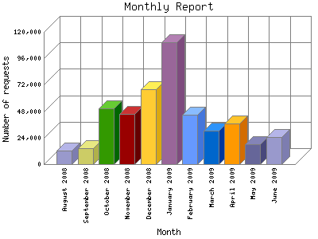

Analog 5.32
Analog 5.32 Report Magic 2.21
Report Magic 2.21The Monthly Report identifies activity for each month in the report
time frame. Remember that each page hit can result in several server requests
as the images for each page are loaded.
Note: Depending on the
report time frame, the first and last months may not represent a complete
month's worth of data, resulting in lower hits.

| Month | Number of requests | Percentage of the requests | |
|---|---|---|---|
| 1. | June 2009 | 24,350 | 5.32% |
| 2. | May 2009 | 18,199 | 3.98% |
| 3. | April 2009 | 36,877 | 8.06% |
| 4. | March 2009 | 30,122 | 6.58% |
| 5. | February 2009 | 44,944 | 9.82% |
| 6. | January 2009 | 110,955 | 24.25% |
| 7. | December 2008 | 67,971 | 14.86% |
| 8. | November 2008 | 45,763 | 10.00% |
| 9. | October 2008 | 50,847 | 11.12% |
| 10. | September 2008 | 14,818 | 3.24% |
| 11. | August 2008 | 12,604 | 2.75% |
Most active month January 2009 : 110,955 requests handled.
Monthly average: 41,586 requests handled.
This report was generated on June 29, 2009 05:50.
Report time frame August 13, 2008 23:20 to June 29, 2009 00:00.
| Web statistics report produced by: | |
| Analog 5.32 | Report Magic 2.21 |